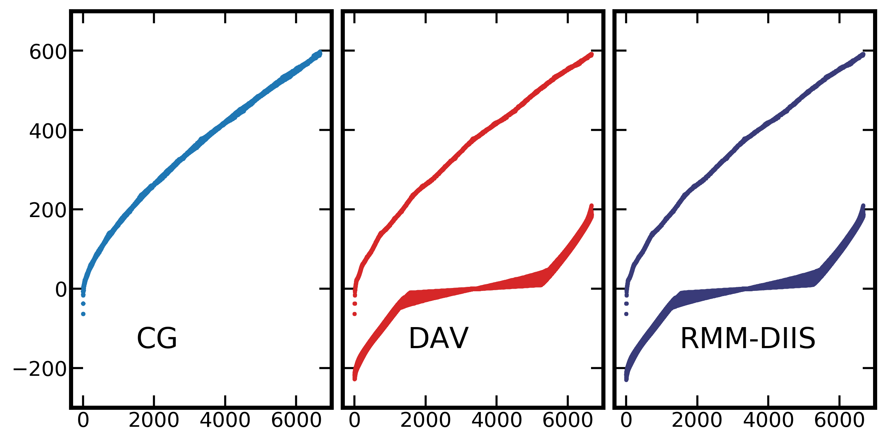

<!DOCTYPE HTML>
<html>
<head>
  <meta charset="utf-8">
  
  <title>GPAW笔记(三)——求解器对全哈密顿量对角化的影响 | Shigaro</title>
  <meta name="author" content="minyez">
  
  <meta name="description" content="minyez&#39;s blog on life, science and programming">
  
  
  <meta name="viewport" content="width=device-width, initial-scale=1, maximum-scale=1">

  <meta property="og:title" content="GPAW笔记(三)——求解器对全哈密顿量对角化的影响"/>
  <meta property="og:site_name" content="Shigaro"/>

  
    <meta property="og:image" content=""/>
  

  
  
    <link href="/assets/images/favicon/icon.png" rel="icon">
  
  
  <link rel="stylesheet" href="/css/bootstrap.min.css" media="screen" type="text/css">
  <link rel="stylesheet" href="/css/bootstrap.css" media="screen" type="text/css">
  <link rel="stylesheet" href="/css/font-awesome.css" media="screen" type="text/css">
  <link rel="stylesheet" href="/css/style.css" media="screen" type="text/css">
  <link rel="stylesheet" href="/css/responsive.css" media="screen" type="text/css">
  <link rel="stylesheet" href="/css/highlight.css" media="screen" type="text/css">
  <link rel="stylesheet" href="/css/google-fonts.css" media="screen" type="text/css">
  <!--[if lt IE 9]><script src="//html5shiv.googlecode.com/svn/trunk/html5.js"></script><![endif]-->

  <script src="/js/jquery-2.0.3.min.js"></script>

  <!-- analytics -->
  
<script>
  (function(i,s,o,g,r,a,m){i['GoogleAnalyticsObject']=r;i[r]=i[r]||function(){
  (i[r].q=i[r].q||[]).push(arguments)},i[r].l=1*new Date();a=s.createElement(o),
  m=s.getElementsByTagName(o)[0];a.async=1;a.src=g;m.parentNode.insertBefore(a,m)
  })(window,document,'script','//www.google-analytics.com/analytics.js','ga');
  ga('create', 'UA-111612868-1', 'auto');
  ga('send', 'pageview');
</script>


<script async src="//busuanzi.ibruce.info/busuanzi/2.3/busuanzi.pure.mini.js">
</script>


</head>

 <body 
>
  <nav id="main-nav" class="navbar navbar-default navbar-fixed-top" role="navigation">
  <div class="container">
    <button type="button" class="navbar-header navbar-toggle" data-toggle="collapse" data-target=".navbar-collapse">
      <span class="sr-only">Toggle navigation</span>
      <span class="icon-bar"></span>
      <span class="icon-bar"></span>
      <span class="icon-bar"></span>
    </button>
    <a class="navbar-brand" href="/"></a>
    <div class="collapse navbar-collapse nav-menu">
      <ul class="nav navbar-nav">
        

        <!-- Categories -->
        
        <li>
          <a href="/" title="Shigaro's Home"
            style="font-weight: normal; font-family: Calibri,Arial; font-size: 18px">
            <i class="fa fa-bank"></i>Home
          </a>
        </li>
        
        

        <!-- Categories -->
        
        <!-- Archives -->
        <li>
          <a href="/archives" title="All the articles."
            style="font-weight: normal; font-family: Calibri,Arial; font-size:     18px">
            <i class="fa fa-archive"></i>Archives
          </a>
        </li>
        
        

        <!-- Categories -->
        
        <!-- Tags -->
        <li>
          <a href="/tags" title="All the tags."
            style="font-weight: normal; font-family: Calibri,Arial; font-size:     18px">
            <i class="fa fa-tags"></i>Tags
          </a>
        </li>
        
        

        <!-- Categories -->
        
        <li class="dropdown">
          <a href="/categories" class="dropdown-toggle" data-toggle="dropdown" title="All the categories."
            style="font-weight: normal; font-family: Calibri,Arial; font-size:     18px">
            <i class="fa fa-folder"></i>Categories
            <b class="caret"></b>
          </a>
          <ul class="dropdown-menu">
            <li class="divider"></li>
            <li><a href="/categories" style="font-size: 20px; font-family: 'Calibri Light',Arial">All
                Categories</a><span></span></li>
            <li class="divider"></li>
            
            <li><a href="/categories/Software/"
                style="font-size: 15px; font-family: 微软雅黑">Software<span></span></a></li>
            
            <li><a href="/categories/Programming/"
                style="font-size: 15px; font-family: 微软雅黑">Programming<span></span></a></li>
            
            <li><a href="/categories/Comment/"
                style="font-size: 15px; font-family: 微软雅黑">Comment<span></span></a></li>
            
            <li><a href="/categories/Algorithm/"
                style="font-size: 15px; font-family: 微软雅黑">Algorithm<span></span></a></li>
            
            <li class="divider"></li>
          </ul>
        </li>
        
        

        <!-- Categories -->
        
        <li>
          <a href="/about" title="About me."
            style="font-weight: normal; font-family: Calibri,Arial; font-size: 18px">
            <i class="fa fa-user"></i>About
          </a>
        </li>
        
        
      </ul>
    </div>
  </div> <!-- container -->
</nav>
<div class="clearfix"></div>
  <div class="container">
  	<div class="content">
    	 


	
		<div class="page-header">		
			<h1> GPAW笔记(三)——求解器对全哈密顿量对角化的影响</h1>
		</div>		
	


<div class="row post">
	<!-- cols -->
	
	<div id="top_meta"></div>
	<div class="col-md-9">
	

	<!-- content -->
	<div class="mypage">		
	  		

	  <link rel="stylesheet" type="text/css" href="/css/hint.min.css"><div class="alert alert-success"><i class="fa fa-lightbulb-o  float-left"></i>  <p>本文比较了GPAW中不同求解器和不同密度收敛条件下对角化哈密顿量得到的本征值. 结果显示, 为了在较大的平面波截断下全对角化得到正确的Kohn-Sham能级, SCF需要使用CG求解器, 并取较严格的密度收敛标准.</p>
</div>
<a id="more"></a>
<h2 id="背景"><a href="#背景" class="headerlink" title="背景"></a>背景</h2><p>GW, RPA和BSE等多体微扰计算需要大量的未占据态, 因此在进行这些计算前通常需要对当前基组下构造的哈密顿量进行全对角化以得到所有本征对. 在GPAW中, 这一步为</p>
<figure class="highlight python"><table><tr><td class="code"><pre><span class="line">GPAW.diagonalize_full_hamiltonian(nbands=<span class="literal">None</span>, ecut=<span class="literal">None</span>)</span><br></pre></td></tr></table></figure>
<p><code>nbands</code>和<code>ecut</code>都设为None时对角化得到的能带数量由平面波截断决定. GPAW这一方法继承自<code>gpaw.paw.PAW</code>, 实际执行对角化命令的是其中的<code>PWWaveFunctions</code>对象.</p>
<p>问题出现在用600 eV截断的平面波基组计算单层MoS2的GW时. 在默认能带数的PBE基态计算下, GPAW给出MoS2能谱对应于半导体, 费米能级约为-1 eV, 但对角化后的能谱对应的却是一个金属, 费米能级在-200 eV左右. 我想这种情况可能跟对角化的算法和基态收敛情况有关, 于是进行了下面的简单测试.</p>
<p>测试的GPAW版本是1.5.2, Python为采用Anaconda3/2019.3发行版. C扩展用Intel 2019编译, 数学库为MKL. 使用<code>mx2</code>函数构造MoS2模型</p>
<figure class="highlight python"><table><tr><td class="code"><pre><span class="line"><span class="keyword">from</span> ase.build <span class="keyword">import</span> mx2</span><br><span class="line"><span class="keyword">from</span> gpaw <span class="keyword">import</span> GPAW, PW, FermiDirac</span><br><span class="line"></span><br><span class="line">mos2 = mx2(formula=<span class="string">'MoS2'</span>, kind=<span class="string">'2H'</span>, a=<span class="number">3.184</span>, thickness=<span class="number">3.127</span>,</span><br><span class="line">           size=(<span class="number">1</span>, <span class="number">1</span>, <span class="number">1</span>), vacuum=<span class="number">10</span>)</span><br><span class="line">mos2.pbc = (<span class="number">1</span>, <span class="number">1</span>, <span class="number">1</span>)</span><br></pre></td></tr></table></figure>
<h2 id="比较不同求解器"><a href="#比较不同求解器" class="headerlink" title="比较不同求解器"></a>比较不同求解器</h2><p>GPAW提供了五种求解器, CG, Davidson, RMM-DIIS, DirectLCAO, DirectPW. 这里主要讨论前三种. 简单测试DirectPW发现, 它计算的MoS2的$\Gamma$点带隙为1.7 eV, 要小于其他求解器和VASP的计算值2.7 eV. 初始化时求解器参数均使用GPAW的默认设置.</p>
<p>测试命令如下</p>
<figure class="highlight python"><table><tr><td class="code"><pre><span class="line">Ecut_kx_pairs = [(<span class="number">300</span>, <span class="number">6</span>), (<span class="number">300</span>, <span class="number">9</span>), (<span class="number">400</span>, <span class="number">12</span>), (<span class="number">400</span>, <span class="number">18</span>), (<span class="number">600</span>, <span class="number">6</span>), (<span class="number">600</span>, <span class="number">18</span>)]</span><br><span class="line">egs = [<span class="string">"cg"</span>, <span class="string">"dav"</span>, <span class="string">"rmm-diis"</span>]</span><br><span class="line"></span><br><span class="line"><span class="keyword">for</span> Ecut, kx <span class="keyword">in</span> Ecut_kx_pairs:</span><br><span class="line">    <span class="keyword">for</span> eg <span class="keyword">in</span> egs:</span><br><span class="line">        suffix = <span class="string">f"Ecut_<span class="subst">&#123;Ecut&#125;</span>_kx_<span class="subst">&#123;kx&#125;</span>_<span class="subst">&#123;es&#125;</span>"</span></span><br><span class="line">        calc = GPAW(mode=PW(Ecut), xc=<span class="string">"PBE"</span>, eigensolver=es</span><br><span class="line">                    kpts=&#123;<span class="string">'size'</span>: (kx, kx, <span class="number">1</span>), <span class="string">'gamma'</span>: <span class="literal">True</span>&#125;,</span><br><span class="line">                    occupations=FermiDirac(<span class="number">0.01</span>), parallel=&#123;<span class="string">'domain'</span>: <span class="number">1</span>&#125;,</span><br><span class="line">                    txt=<span class="string">f'MoS2_gs_<span class="subst">&#123;suffix&#125;</span>.txt'</span>)</span><br><span class="line">        mos2.set_calculator(calc)</span><br><span class="line">        mos2.get_potential_energy()</span><br><span class="line">        calc.write(<span class="string">f'MoS2_gs_<span class="subst">&#123;suffix&#125;</span>.gpw'</span>)</span><br><span class="line">        calc.diagonalize_full_hamiltonian()</span><br><span class="line">        calc.write(<span class="string">f'MoS2_fulldiag_<span class="subst">&#123;suffix&#125;</span>.gpw'</span>)</span><br></pre></td></tr></table></figure>
<p>CG使用4核并行, Davidson和RMM-DIIS使用16核并行. 测试结果如下表, 后三列中的值是分别用对角化和基态迭代计算得到的前20个能级的本征能量差, 定义为</p>
<p>$$<br>\Delta_{20} \equiv \sum_k\sum^{n&lt;20}_{n=0}{|\epsilon^{diag}_{nk}-\epsilon^{gs}_{nk}|}.<br>$$</p>
<p>第三列是对角化得到的能带总数. 当取平面波截断到600 eV时, 使用Davidson和RMM-DIIS时的本征能量差非常大. 10次方误差来源是指标为0的能带的能量.</p>
<table>
<thead>
<tr>
<th style="text-align:left">Ecut</th>
<th style="text-align:left">kx</th>
<th style="text-align:left">$N_{pw}$</th>
<th style="text-align:center">CG</th>
<th style="text-align:center">Dav</th>
<th style="text-align:center">RMM-DIIS</th>
</tr>
</thead>
<tbody>
<tr>
<td style="text-align:left">300</td>
<td style="text-align:left">6</td>
<td style="text-align:left">2368</td>
<td style="text-align:center">8.2E-01</td>
<td style="text-align:center">2.6E+00</td>
<td style="text-align:center">1.6E+01</td>
</tr>
<tr>
<td style="text-align:left">300</td>
<td style="text-align:left">9</td>
<td style="text-align:left">2368</td>
<td style="text-align:center">8.2E-01</td>
<td style="text-align:center">1.0E+00</td>
<td style="text-align:center">1.9E+01</td>
</tr>
<tr>
<td style="text-align:left">400</td>
<td style="text-align:left">12</td>
<td style="text-align:left">3655</td>
<td style="text-align:center">2.7E-01</td>
<td style="text-align:center">1.6E+00</td>
<td style="text-align:center">2.5E+01</td>
</tr>
<tr>
<td style="text-align:left">400</td>
<td style="text-align:left">18</td>
<td style="text-align:left">3655</td>
<td style="text-align:center">4.5E-02</td>
<td style="text-align:center">2.0E+00</td>
<td style="text-align:center">5.2E+01</td>
</tr>
<tr>
<td style="text-align:left">600</td>
<td style="text-align:left">6</td>
<td style="text-align:left">6666</td>
<td style="text-align:center">4.7E+00</td>
<td style="text-align:center">5.6E+09</td>
<td style="text-align:center"></td>
</tr>
<tr>
<td style="text-align:left">600</td>
<td style="text-align:left">18</td>
<td style="text-align:left">6666</td>
<td style="text-align:center">3.5E+00</td>
<td style="text-align:center">6.2E+10</td>
<td style="text-align:center">6.2E+10</td>
</tr>
</tbody>
</table>
<p>下图是设置三种不同的求解器时, 在600 eV截断下全对角化得到的所有k点上的本征值谱, 横坐标是能带指标. 当GPAW采用Davidson和RMM-DIIS时, 全对角化后部分k点上的能量系统偏低200 eV. 使用CG时怎没有这样的问题.</p>
<p><figure class="null"><figcaption>600 eV平面波截断时对角化所得本征值</figcaption></figure></p>
<p>这里基本可以得到结论, 当需要在较大基组下对角化哈密顿量时, 基态计算采用CG求解器是比较保险的做法. 这里有一个了令人疑惑的地方是, 源码中<code>PWWaveFunctions</code>对象的对角化方法利用的是C扩展中的Scalapack功能, 与求解器应该没有直接的联系, 但结果看来求解器确实会影响对角化结果.</p>
<h2 id="CG下比较不同密度收敛限"><a href="#CG下比较不同密度收敛限" class="headerlink" title="CG下比较不同密度收敛限"></a>CG下比较不同密度收敛限</h2><p>下面测试密度收敛限对对角化所得的本征值的影响. 这里Ecut仍然取较大的600 eV, 求解器使用CG. 通过改变GPAW初始化时的<code>convergence</code>参数, 调整密度收敛限, 如</p>
<figure class="highlight python"><table><tr><td class="code"><pre><span class="line">calc = GPAW(mode=PW(Ecut), xc=<span class="string">"PBE"</span>, eigensolver=es,</span><br><span class="line">            convergence=&#123;<span class="string">'density'</span>: <span class="number">1E-6</span>&#125;)</span><br></pre></td></tr></table></figure>
<p>测试结果如下表. 可以看出, 采用1E-08作为SCF收敛限时, 本征值收敛到非常小的阈值内, 同时SCF和对角化得到的低能能态在能量上完全一致. 另外, 如果不用CG而仍然用Davidson或者RMM-DIIS, 增大密度收敛限$\Delta_{20}$相比上一节没有改善.</p>
<table>
<thead>
<tr>
<th style="text-align:left">kx</th>
<th style="text-align:left">Convergence (Log10)</th>
<th style="text-align:center">$\sum_{nk}{\epsilon_{nk}}$ (w.r.t default)</th>
<th style="text-align:center">$\Delta_{20}$</th>
</tr>
</thead>
<tbody>
<tr>
<td style="text-align:left">6</td>
<td style="text-align:left">-4.61 (default)</td>
<td style="text-align:center">0</td>
<td style="text-align:center">4.7E+00</td>
</tr>
<tr>
<td style="text-align:left">6</td>
<td style="text-align:left">-6</td>
<td style="text-align:center">4.9383</td>
<td style="text-align:center">2.7E-04</td>
</tr>
<tr>
<td style="text-align:left">6</td>
<td style="text-align:left">-8</td>
<td style="text-align:center">5.0000</td>
<td style="text-align:center">4.0E-09</td>
</tr>
<tr>
<td style="text-align:left">18</td>
<td style="text-align:left">-4.61 (default)</td>
<td style="text-align:center">0</td>
<td style="text-align:center">3.5E+00</td>
</tr>
<tr>
<td style="text-align:left">18</td>
<td style="text-align:left">-6</td>
<td style="text-align:center">9.4296</td>
<td style="text-align:center">1.5E-06</td>
</tr>
<tr>
<td style="text-align:left">18</td>
<td style="text-align:left">-8</td>
<td style="text-align:center">10.018</td>
<td style="text-align:center">1.5E-08</td>
</tr>
</tbody>
</table>
<!-- 它们在VASP里也有IALGO和ALGO的相似对应, 分别是58 (Conjugate, All), 38 (Normal)和48 (Very_fast). -->
	  
	</div>

    
	<div>
  	<center>
	<div class="pagination">
<ul class="pagination">
	 
				
    	<li class="prev"><a href="/2019/06/28/gpaw-4-gw/" class="alignleft prev"><i class="fa fa-arrow-circle-o-left"></i>Prev</a></li>
  		

        <li><a href="/archives"><i class="fa fa-archive"></i>Archive</a></li>

		
		   <li class="next"><a href="/2019/06/18/gpaw-2-scf-bs/" class="alignright next">Next<i class="fa fa-arrow-circle-o-right"></i></a></li>         
        
	
</ul>
</div>

    </center>
	</div>
    
	
    <!-- bdshare -->
    
        

        

    

	<!-- comment -->
    
<section id="comment">
  <h2 class="title">Comments</h2>

  
<div id="disqus_thread"></div>
<script>
/**
*  RECOMMENDED CONFIGURATION VARIABLES: EDIT AND UNCOMMENT THE SECTION BELOW TO INSERT DYNAMIC VALUES FROM YOUR PLATFORM OR CMS.
*  LEARN WHY DEFINING THESE VARIABLES IS IMPORTANT: https://disqus.com/admin/universalcode/#configuration-variables*/
/*
var disqus_config = function () {
this.page.url = PAGE_URL;  // Replace PAGE_URL with your page's canonical URL variable
this.page.identifier = PAGE_IDENTIFIER; // Replace PAGE_IDENTIFIER with your page's unique identifier variable
};
*/
(function() { // DON'T EDIT BELOW THIS LINE
var d = document, s = d.createElement('script');
s.src = 'https://shigaro.disqus.com/embed.js';
s.setAttribute('data-timestamp', +new Date());
(d.head || d.body).appendChild(s);
})();
</script>
<noscript>Please enable JavaScript to view the <a href="https://disqus.com/?ref_noscript">comments powered by Disqus.</a></noscript>
  
</section>


	</div> <!-- col-md-9/col-md-12 -->
		
	
	<div id="side_meta">
		<div class="col-md-3" id="post_meta"> 

	<!-- date -->
	
	<div class="meta-widget">
	<i class="fa fa-clock-o"></i>
	2019-06-19 created
	</div>
	
		
    
	

	<!-- page view by busuanzi -->
	
	<div class="meta-widget">
	<span id="busuanzi_container_page_pv">
	<i class="fa fa-eye"></i>
	<span id="busuanzi_value_page_pv"></span> views
	</span>
	</div>
	

	<!-- post word count -->
	
	<div class="meta-widget">
	<i class="fa fa-tachometer"></i>
	<span class="post-count">1.2k</span> words
	</div>
	

	<!-- categories -->
    
	<div class="meta-widget">
	<a data-toggle="collapse" data-target="#categorys"><i class="fa fa-folder"></i></a>	
    <ul id="categorys" class="tag_box list-unstyled collapse in">
          
  <li>
    <li><a href="/categories/Software/">Software<span class="badge">26</span></a></li>
  </li>

    </ul>
	</div>
	

	<!-- tags -->
	
	<div class="meta-widget">
	<a data-toggle="collapse" data-target="#tags"><i class="fa fa-tags"></i></a>		  
    <ul id="tags" class="tag_box list-unstyled collapse in">	  
	    
  <li><a href="/tags/GPAW/">GPAW<span class="badge">5</span></a></li> <li><a href="/tags/DFT/">DFT<span class="badge">4</span></a></li> <li><a href="/tags/Band-structure/">Band structure<span class="badge">2</span></a></li>

    </ul>
	</div>
		

	<!-- toc -->
	<div class="meta-widget">
	
	   <a data-toggle="collapse" data-target="#toc"><i class="fa fa-bars"></i></a>
	   <div id="toc" class="toc collapse in">
			<ol class="toc-article"><li class="toc-article-item toc-article-level-2"><a class="toc-article-link" href="#背景"><span class="toc-article-text">背景</span></a></li><li class="toc-article-item toc-article-level-2"><a class="toc-article-link" href="#比较不同求解器"><span class="toc-article-text">比较不同求解器</span></a></li><li class="toc-article-item toc-article-level-2"><a class="toc-article-link" href="#CG下比较不同密度收敛限"><span class="toc-article-text">CG下比较不同密度收敛限</span></a></li></ol>
		</div>
	
	</div>
	
    <hr>
	
</div><!-- col-md-3 -->

	</div>
		

</div><!-- row -->

<script type="text/javascript">
var disqus_shortname = 'shigaro';
(function(){
  var dsq = document.createElement('script');
  dsq.type = 'text/javascript';
  dsq.async = true;
  dsq.src = '//' + disqus_shortname + '.disqus.com/embed.js';
  (document.getElementsByTagName('head')[0] || document.getElementsByTagName('body')[0]).appendChild(dsq);
}());
</script>


	</div>
  </div>
  <div class="container-narrow">
  <footer> <p>
  
  &copy; 2020 by <a href="http://shigaro.org"> minyez </a>
  
    | <a href="http://github.com/minyez/hexo-theme-freemind/">Theme</a> based on two Freemind themes by <a href="https://github.com/wzpan/hexo-theme-freemind/">wzpan</a> and <a href="https://github.com/PytLab/hexo-theme-freemind/">PytLab</a> 
    | Powered by <a href="https://github.com/hexojs/hexo">Hexo</a>
  
    <span id="busuanzi_container_site_uv">| <span id="busuanzi_value_site_uv"></span> visitors</span>
  
  
	| <span class="post-count">52.3k</span> words
  
</p>
 </footer>
</div> <!-- container-narrow -->
  


  
<a id="gotop" href="#">   
  <span>▲</span> 
</a>

<script src="/js/jquery.imagesloaded.min.js"></script>
<script src="/js/gallery.js"></script>
<script src="/js/bootstrap.min.js"></script>
<script src="/js/main.js"></script>
<script src="/js/search.js"></script> 


<link rel="stylesheet" href="/fancybox/jquery.fancybox.css" media="screen" type="text/css">
<script src="/fancybox/jquery.fancybox.pack.js"></script>
<script type="text/javascript">
(function($){
  $('.fancybox').fancybox();
})(jQuery);
</script>


   <script type="text/javascript">      
     var search_path = "search.xml";
	 if (search_path.length == 0) {
	 	search_path = "search.xml";
	 }
	 var path = "/" + search_path;
     searchFunc(path, 'local-search-input', 'local-search-result');
   </script>


<!-- Global site tag (gtag.js) - Google Analytics -->
<!--    added 2018-07-12 -->
<!-- modified 2019-05-10 -->

<script async src="https://www.googletagmanager.com/gtag/js?id=UA-111612868-1"></script>
<script>
  window.dataLayer = window.dataLayer || [];
  function gtag(){dataLayer.push(arguments);}
  gtag('js', new Date());

  gtag('config', 'UA-111612868-1');
</script>


<script type="text/x-mathjax-config">
    MathJax.Hub.Config({
        tex2jax: {
            inlineMath: [ ["$","$"], ["\\(","\\)"] ],
            skipTags: ['script', 'noscript', 'style', 'textarea', 'pre', 'code'],
            processEscapes: true
        },
        TeX: {equationNumbers: { autoNumber: "AMS" }}
    });
    MathJax.Hub.Queue(function() {
        var all = MathJax.Hub.getAllJax();
        for (var i = 0; i < all.length; ++i)
            all[i].SourceElement().parentNode.className += ' has-jax';
    });
</script>
<!--<script src="http://cdn.mathjax.org/mathjax/latest/MathJax.js?config=TeX-AMS-MML_HTMLorMML"></script>-->
<script type="text/javascript" async src="https://cdnjs.cloudflare.com/ajax/libs/mathjax/2.7.1/MathJax.js?config=TeX-AMS-MML_HTMLorMML"></script>

</body>
   </html>
